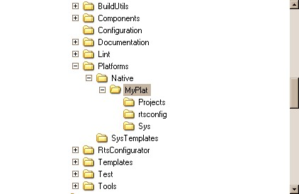
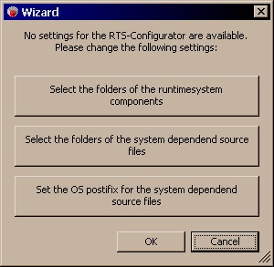
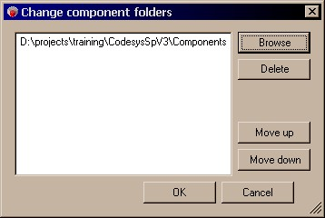
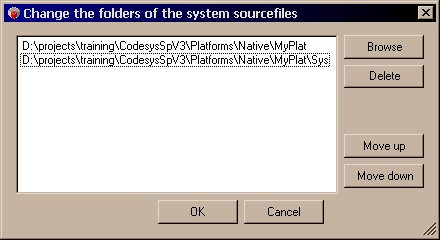
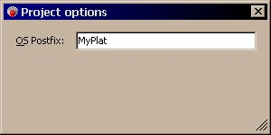
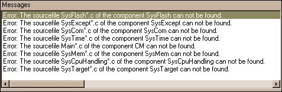
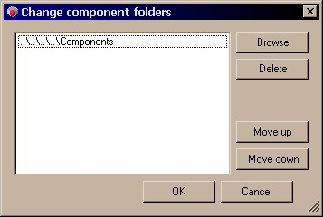
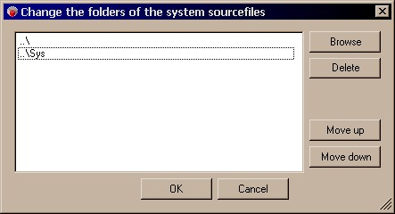
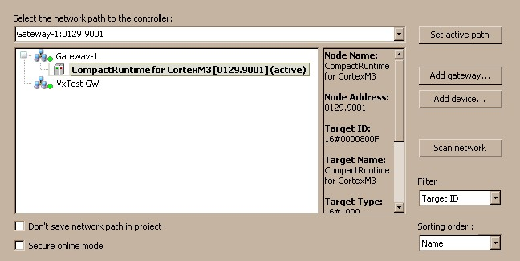

Step by Step¶
To follow this step-by-step tutorial, we assume that you have a specific project layout. For simplicity, we call the new Platform „MyPlat“. So you should replace this name everywhere with the name of your specific CPU-, OS- or Boardname.
We don’t want to focus on a specific compiler or a specific platform. So most of the descriptions are kept very neutral in respect to this. Depending on your specific hardware, there might be some more steps involved, which are not mentioned here.
The expected file layout looks like this:
- ComponentsHere you will find all generic code of our runtime core. You should never change any of those files for your adaptation. If you really have the need to change something here, you should copy this specific component to your platform directory, rename it and adopt it for your project.Note: Renaming is essential, because otherwise the component will be faulty marked as a 3S component!
Platforms
Native
MyPlat
- rtsconfigThis folder contains the configuration of the runtime which we create with our „RtsConfigurator“.
- SysThis folder will keep all source files, which need to be adopted for our platform.
- ProjectsHere, you should place your project-/makefiles for your specific compiler.
Configure your Runtime, using the RtsConfigurator¶
The RtsConfigurator is used to manage a collection of Components that build up a CODESYS Control runtime system. In this process, the RtsConfigurator helps you in resolving the dependencies between the components dynamically. You can select the components in the top left field by categories or in the bottom left field from a sorted list. If the currently selected components have unresolved dependencies, they are displayed on the right. There you can decide, how you want to resolve them.
Note: Optional dependencies and implicit dependencies are not resolved. Such an implicit dependency might be: CmpBlkDrvCan needs a CAN-Mini-Driver to work. But because this Mini-Driver has registers itself at the CANL2 layer and not the other way, the dependency to the Mini-Driver is not known
- Before we can start the RtsConfigurator, we have to create the file structure, like it is described in section 2.1:
- Start the RtsConfigurator from RtsConfigurator -> Bin:
- Select Components Folder:
- Select the System Folder
- Set OS Prefix
- Add the following components to your project by selecting them in the bottom left list:CmpAppEmbeddedCmpBinTagUtilCmpBlkDrvComCmpChannelMgrEmbeddedCmpChannelServerEmbeddedCmpChecksumCmpCommunicationLibCmpDeviceCmpEventMgrCmpIecTaskCmpIoMgrEmbeddedCmpLogEmbeddedCmpMemPoolCmpMonitorCmpNameServiceServerCmpRetainCmpRouterEmbeddedCmpScheduleEmbeddedCmpSettingsEmbeddedCmpSrvSysComSysCpuHandlingSysExceptSysFileFlashSysFlashSysInternalLibSysMemSysTargetSysTime
Note: If your Runtime is newer than the version described in this document, you might encounter some new dependencies. Please resolve them manually if necessary.
- After that, you will see the following list of errors in the “Messages” window:This gives you a list of files, that you need to implement, to adopt the CODESYS Control Runtime with the current settings to your new platform. The adaptation will be done in section 2.1.5 and 2.1.7. Now we will leave the RtsConfigurator open in the background and start copying the required files…
Get all necessary source files from SysTemplates¶
The Folder Platform -> SysTemplates of the StarterPackage contains some examples and scaffolds to build up your own adaptation files. Based on the list printed by the RtsConfigurator in section 2.1.1, you should copy and rename all necessary files from “Platforms -> SysTemplates” to “Platforms -> Native -> MyPlat -> Sys”.
You might notice, that all files in the SysTemplates folder have the postfix “OS”. This will be replaced by our own name. In our example this is “MyPlat”, but you should use your own description here.
Additionally to this, you should also copy some header files from the SysTemplates. We will place those files not to the “Sys”-Folder, but outside, so that they are clearly seperated from the sources. Those header files are containing the configuration of the runtime as well as some platformspecific definitions.
Finish Configuration with RtsConfigurator¶
Go back to the RtsConfigurator and open the menu Options -> Folders of system components just to close it again. This way, the RtsConfigurator is doing a new scan for the files and the error messages from the “Messages” window should disappear.
Note: If there are still some error messages, please check the that you selected the correct paths and that the “OS Prefix”, selected in the Options -> Project options is the same as the postfix of the files, which you copied to your folder (postfix = the name with which you substituted the postfix “OS” from the default filename. In our example this is “MyPlat”).
We recommend to name it “compact.rcp”, because this is the configuration of our compact runtime. This name will be used to generate some header files, which we are including later.
Now, that we saved everything, we can also change the paths in our RtsConfigurator Project from absolute to relative:
- Options -> Component folders
- Options -> Folders for system components
Save again!
Note: This is a good time to check everything in into your version control system. Later on I will only refer to files, which need to be added explicitly, based on this version.
- After you saved the project, you can generate the output files:Output -> Generate all output files
- The most important files for us are the following:compact.c_ compact.h compact_NotImpl.h
Create Project to Compile¶
Now you should create a new project, using your compiler and maybe the IDE which comes with it. How this works exactly depends heavily on your compiler and is not covered here. But there are a few settings, which will be necessary in any way:
Save the Project under: Platforms -> Native -> MyPlat -> Projects
- Set the Include Paths to (if possible with relative paths):ComponentsPlatforms -> Native -> MyPlat
On systems with less then 32Bit address width, you should set your memory model to s.th. like “huge” or “large” (please check your compiler manual). Because we might need to address buffers, which might be more far away as the segment size of your processor.
Add all C-Files, which are listed in the file compact.c_ to your project.
If you now try to compile, it depends on your toolchain if it works or not. But in general you should encounter only some small issues, like unnecessary include directives. Just remove them as necessary.
Adapting all files for communication¶
MainMyPlat.c¶
This file should contain your “main” entry point. On an embedded platform, you will usually have another processor entry in which you need to setup some of the basic peripherals or memory mappings. It’s up to you if you integrate this to this file or not. We will assume that your entry begins in a C-Function, called “main()”.
At the top of this file, there is an include statement for “myPlatform.h”. You need to change this to “rtsconfig/compact.h”. This file contains basically a list of all configured components, which we will pass to CMInit() to initialise our system.
For now we will not load the configuration settings from a file, but we will configure the system statically (see 2.1.5.5). So we will pass NULL as the name of the configuration file. The minimal version of our main() function will look like this:
int main() {
RTS_RESULT Result;
Result = CMInit(NULL, s_ComponentList);
while(!s_bExitLoop) {
CMCallHook( CH_COMM_CYCLE, 0, 0, FALSE);
}
return 0;
}
Note: MainLoadComponent() and MainUnloadComponent() can be used for dynamically linked systems, to load new components dynamically at system startup. This is not necessary for our small runtime, because we will link our system statically.
SysComMyPlat.c¶
The communication between CODESYS and CODESYS Control will be done over a serial link. The driver for the serial interface needs to be implemented in this component.
The general driver scheme which is necessary is as follows:
- SysComOpen()Just make a wrapper for SysComOpen2().
- SysComOpen2()Setup the serial interface with our configuration settings. Especially set the baudrate of the interface.
- SysComClose()Disable the serial interface. Especially you should disable the hardware interrupts.
- SysComSetSettings() / SysComGetSettings()These functions are not used in our communication layer, so you can leave them blank for now.
- InterruptHandler()Register your own interrupt handler for send- and receive interrupts. Use the buffers “sendBuf” and “recvBuf”, which are already declared in this file for your send and receive packets.
On a receive interrupt: read byte(s) and write it to the “recvBuf”.
On send interrupt: check if there is something left in the “sendBuf” and write it to the chip.
- SysComRead()Read as much as you can from the “recvBuf” and return it to the user. For simplicity it is also possible to return only one byte at a time, but this will produce more system overhead and is only recommended for the first tests.
SysComWrite()
If “sendBuf” is empty, write first character directly to the chip and fill the rest into the “sendBuf”.
If “sendBuf” is full, just append everything to “sendBuf”.
Note: Remember to disable interrupts during manipulation of the buffers!
SysTargetMyPlat.c¶
This component returns the target identification, like: TargetID, VendorID, NodeName, Serial Number, … . Most of the parameters are already returned by the higher-level component, and are taken from the file “targetdefines.h”, which is part of your delivery (see 2.1.5.5).
In this file, you just have to return the NodeName, which is displayed in the Device Scan Dialog. But for the first tests you can leave it as is.
SysTimeMyPlat.c¶
This component provides some basic functions for the runtime to measure relative timings. The time values returned by the functions from this file have no relations to a realworld time, so for example they can not be converted directly to a fix UTC time. Usually the time is measured since the system startup and that’s enough, because the functions are just used to measure relative times.
- SysTimeGetMs()Returns a relative timestamp in milliseconds.
- SysTimeGetUs()Returns a relative timestamp in microseconds.
- SysTimeGetNs()Returns a relative timestamp in nanoseconds.
Depending on your hardware, you can use a free programmable system timer or a timestamp counter to determine this time. Examples for some sources in some architectures:
- X86: Timestamp Counter (TSC):With every processor cycle the x86 increments this counter by one. So you get the number of processor cycles since system startup.
- PPC: Timebase register (TB):This counter is incremented with the frequency of the bus. You need to check your hardware manual to determine the exact frequency.
- ARM and others:If no such counter is available, you can program a periodic timer to get a high-precision system time. Note, that you don’t have to generate interrupts, but in most cases you can just read the current value of the timer. That’s much more efficient then generating permanently interrupts and counting these.
sysdefines.h / sysspecific.h¶
For the Platformspecific configuration, we differentiate between those two include files. Both files are included in every source file, which is built in the CODESYS Control Runtime. But anyway, they are both playing different roles in the configuration:
- sysdefines.hThis file contains and includes everything which belongs to the configuration of the runtime system. In the end it should really be a collection of defines and configuration entries, which are configuring the system.
- sysspecific.hIn contrary to sysdefines.h this file should only define some compiler-, OS- or CPU-specific things which are necessary on this platform. For example: HUGE_PTR, CDECL, …
Because the sysdefines.h contains the configuration of the system, we also include the header file, generated by the RtsConfigurator here. You should add an include statement for “rtsconfig/compact_NotImpl.h”:
#include <rtsconfig/compact_NotImpl.h>
This file is important, because it defines which components are not contained in our system. Some of our runtime system components have optional dependencies. And to disable those dependencies in a statically linked application, we need to set those defines.
You should also add a include statement for the file “targetdefines.h”, which was included in our SDK. This file contains your VendorID, TargetID, Target Signature, … . Just copy it to Platforms -> Native -> MyPlat:
#include <targetdefines.h>
Because we have no Filesystem, yet, we cannot load any configuration file. Therefore we included the component CmpSettingsEmbedded instead of CmpSettings in our configuration of the compact runtime. The full component CmpSettings is reading and writing the configuration entries from and to a file on the filesystem. The embedded version of this component implements the exact same interface but uses the configuration settings which are set in sysdefines.h:
/*** Defines, used only in CmpSettingsEmbedded.* Defines the configuration settings, as well as free spaces,* to add new settings.* The format is:* “ComponentName”, “KeyName”, Value* If the “KeyName” is 0, this slot is reserved for new keys,* which might be added to this component.*/#define SETTG_ENTRIES_INT \{“CmpRouter”, “NumRouters”, 1}, \{“CmpBlkDrvCom”, “Com.0.Port”, 1}, \{“CmpBlkDrvCom”, “Com.0.Baudrate”, 115200}, \{“CmpMy”, 0, 0}, \{0, 0, 0}#define SETTG_ENTRIES_STRING \{“CmpRouter”, “0.MainNet”, “MyCom”}, \{“CmpBlkDrvCom”, “Com.0.Name”, “MyCom”}, \{“CmpMy”, 0, 0}, \{0, 0, 0}
Gateway.cfg¶
This is a configuration file on your development host. It is used to configure the CODESYS Gateway. Specifically we want to add our serial port as a new communication interface to it.
First you should find out which serial port your target is connected to. If you have a target that’s connected using a USB link, you may want to check the device manager of Windows to find out which com port is assigned to your device.
Got to your CODESYS installation directory -> GatewayPLC and open the file gateway.cfg.
- Add the component “CmpBlkDrvCom” to the list of components:[ComponentManager]Component.1=CmpBlkDrvCom
- Add a new Router instance:[CmpRouter]1.MainNet=MyCom
- Configure the serial port:[CmpBlkDrvCom]Com.0.Port=19Com.0.Name=MyComCom.0.Baudrate=115200Com.0.EnableAutoAddressing=1
Please restart your Gateway (using the systray icon ).
To check if the communication works, you can use the tool “portmon” from sysinternals to monitor the traffic on your serial port. After you made the configuration settings above, you should see some packets sent by the Gateway if you try to scan the network with CODESYS.
Test the communication¶
After you made all the adaptations above, you should already see the device in the scan dialog:

If not, check the section 2.3.2 for some tipps how to debug the problem.
Adapt all files for a first download¶
MyPlat.devdesc.xml¶
You should create a so called “device description” for your device. As a starting point, you should check out the files in Templates -> Devices of your CODESYS Control SDK. There you will find templates for various architectures and various configurations. Go to the folder of your target CPU and take one of the device descriptions with the prefix “Compact_” as a starting point.
The device description should already have the correct compiler settings. For the first tests, you should only change the device name:
DeviceDescription -> Device -> DeviceIdentification
Type: The default is 4096 and this is suitable for every logical PLC.
Id: This is a combination of your VendorID and your TargetID. This should already match your settings.
Version: The version can be used by you to force the user to use a device description that matches your Firmware.
DeviceDescription -> Device -> DeviceInfo
Name: The name of your PLC when you select it in CODESYS.
Description: Description which is displayed when you select your PLC.
Vendor: Your Vendor Name
Icon: Reference to an Icon that is displayed in the device tree (*.ico, 32x32).
Image: Image, which is displayed near the description, when you select your PLC in CODESYS (*.png, *.jpg, full-sized image, auto-scaled).
To select your PLC in CODESYS, you need to install it first. Go to Tools -> Device Repository -> Install and select your Device Description. After you pressed “OK”, you should find your newly installed device with the name that you specified in the device description in the device list.
SysCpuHandlingMyPlat.c¶
This component contains some CPU-specific low level functionality. It usually consists of much assembler code, which is dependant on the CPU and the C-Compiler. Before you start implementing this functionality from scratch, you should contact your first level support at 3S – Smart Software Solutions to get an example for your CPU. Even if it doesn’t match the syntax of your Assembler it should be easier to port it than to start from scratch.
If your platform is too different and you need to start from scratch, you should start with the function SysCpuCallIecFuncWithParams() and implement it similar to this:
int CDECL SysCpuCallIecFuncWithParams(void* pfIECFunc, void* pParam,int iSize)
{
void (*pfFunc)();
void *pStack;
int iStackSize = (iStackSize + 3) & ~3;
pfFunc = pfIECFunc;
fun = (PFFUNCWITHPARAMS)pfIECFunc;
__asm {
sub SP, iStackSize
mov pStack, SP;
}
memcpy(pStack, pParam, iSize);
pfFunc();
memcpy(pParam, pStack, iSize);
__asm {
add SP, iStackSize
}
return ERR_OK;
}
Note, that this code only works, if your compiler doesn’t place the local variables on the stack, but keeps them in callee save registers.
The function SysCpuGetCallstackEntry() and is used to unwind the callstack when debugging or in case of an exception. This code is pretty similar on most platforms, as most callstacks are just saved in form of linked lists on the stack. The function SysCPUGetCallstackEntry2() is just an extended version, which differenciates between a C and an IEC context. That’s only important if your C-Compiler uses a different stack layout as the IEC Compiler of CODESYS. The unwinding code should look something like this:
typedef struct stack {
struct stack *next;
void *eip;
} stack_t;
RTS_RESULT CDECL SysCpuGetCallstackEntry(unsigned long *pulBP, void **ppAddress)
{
stack_t *tStackEntry = (stack_t*)pulBP;
if (pulBP == NULL || *pulBP == 0 || ppAddress == NULL)
if (ppAddress != NULL)
*ppAddress = NULL;
return ERR_PARAMETER;
}
if( !CAL_SysMemIsValidPointer((void *)&tStackEntry,4, 0) ||
!CAL_SysMemIsValidPointer((void *)tStackEntry->next,4, 0) ||
!CAL_SysMemIsValidPointer((void *)tStackEntry->next->eip,4, 0))
{
*ppAddress = 0;
return ERR_FAILED;
}
*ppAddress = tStackEntry->next->eip;
*pulBP = tStackEntry->next->next;
return ERR_OK;
}
There are two additional functions, which are used for atomic access of bits. These are called SysCpuTestAndSet() and SysCpuTestAndReset(). On nearly every CPU architecture, it should be possible to do an atomic read-modify-write operation or even an atomic bit-operation. If it is possible on your CPU, you should implement this API function accordingly. If it is not possible, or you just want to do this later, you can use the base implementation, which is just doing an interrupt lock around the read-modify-write operation:
RTS_RESULT CDECL SysCpuTestAndSet(unsigned long* pul, int iBit)
{
return SysCpuTestAndSetBase(pul, iBit);
}
RTS_RESULT CDECL SysCpuTestAndReset(unsigned long* pul, int iBit)
{
return SysCpuTestAndResetBase(pul, iBit);
}
All other functions are only for debugging. They are discussed in section 3.3.1.
SysExceptMyPlat.c¶
Beside the two install and exit functions, this API contains only one API function which you need to install, that is called SysExceptMapException(). This function simply maps the exception number, which is reported by your CPU to the Exception IDs which are known by CODESYS. For a list of the available exception IDs, have a look in SysExceptItf.m4. There is a list of defines, starting with RTSEXCEPT_*.
To handle an exception, you need to install an exception handler on your hardware. How this works depends pretty much on the hardware or on the fact if an OS is used or not. But in general, you should try to catch the exception as soon as possible.
After you caught the exception, you need to be able to get the cause of the exception. The cause of the exception will be later expressed by an exception code, which is a 32Bit number. Additionally you have to determine the code location where the exception occurred and the base-pointer to unwind the call-stack later.
For example – if the exception state was pushed on the stack, your code may look something like this:
void SysExceptHandler()
{
RegContext reg;
unsigned long *pStack;
void *pSP;
void *pBP;
__asm {
mov pStack, SP;
mov pSP, SP;
mov pBP, BP;
}
reg.IP = pStack[EXC_IP_IDX];
reg.SP = pSP;
reg.BP = pBP;
CAL_SysExceptGenerateException(0, pStack[EXC_TYPE_IDX], reg);
}
SysMemMyPlat.c¶
SysMem provides an API for the runtime and the IEC Application to allocate or free two different kinds of data:
Data: This is used to manage general heap data of the runtime and the application.
Areas: The areas are used to store the code, data, retain data and I/Os of the IEC Application.
On most systems your C-Library will provide some malloc and free functions for you. If so, you should use them to implement SysMemAllocData(), SysMemReallocData() and SysMemFreeData().
If you like, you can place the areas of your IEC Application at a specific address. For this, you need to tell your linker that this memory range is reserved:
Keil uVision: “Options for …” -> “LXXX Misc” -> Reserve
TASKING.VX-Toolset: Add a new memory section to <projectname>.lsl and mark it as “Reserved”.
GNU Linker: Reserve Memory area in the linker script.
If you made sure that your C compiler doesn’t use the memory area anymore, you can just return the fix address in SysMemAllocArea(). In SysMemFreeArea() you can either zero the whole area, or you can just do nothing.
Alternatively, you can just forward the call to SysMemAllocData() and SysMemFreeData():
void* CDECL SysMemAllocArea(char *pszComponentName, unsigned short
usType, unsigned long ulSize, RTS_RESULT *pResult)
{
return SysMemAllocData(pszComponentName, ulSize, pResult);
}
RTS_RESULT CDECL SysMemFreeArea(char *pszComponentName, void* pCode)
{
return SysMemFreeData(pszComponentName, pCode);
}
As long as the CODESYS Codegenerator supports code relocation for your target, you can leave SysMemAllocCode() and SysMemFreeCode() at the default implementation, which falls back to SysMemAllocData() and SysMemFreeData(). If it doesn’t, you need to use a fix address in the Runtime as well as a fix start-address for the areas in your Device Description. So if your target doesn’t support relocation, go to your device description and check that it has a statement like that:
<ts:setting name=”start-address” type=”integer” access=”visible”
xmlns:ts=”http://www.3s-software.com/schemas/TargetSettings-0.1.xsd”>
<ts:value>0xE04000</ts:value>
</ts:setting>